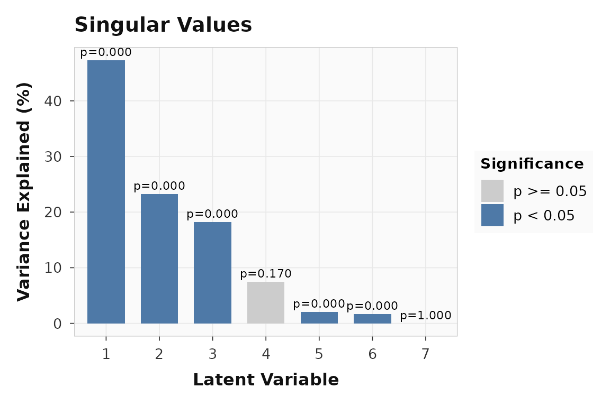
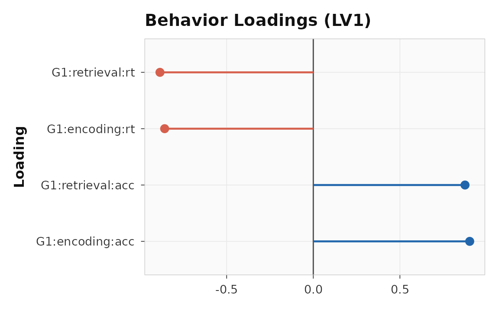
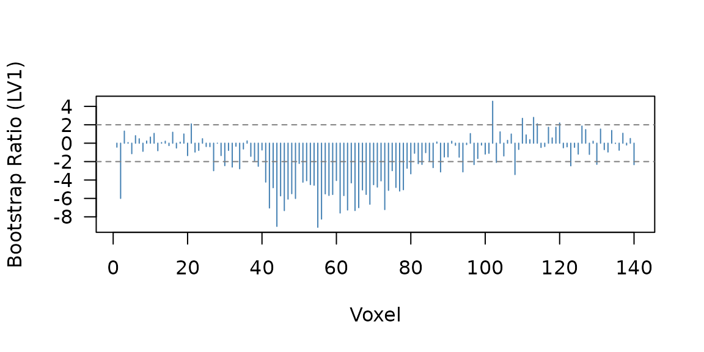
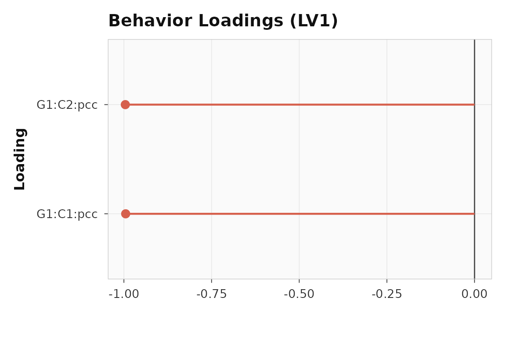
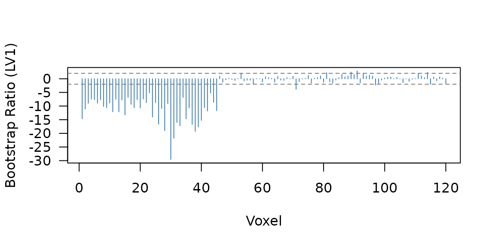
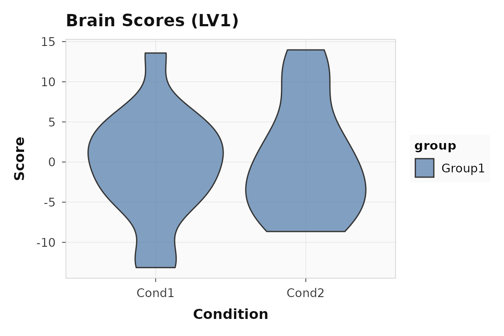

Sometimes task structure and behavior are both interesting — you want a single decomposition that captures how brain patterns relate to both condition differences and continuous measures. That is Multiblock PLS. When the “behavior” block is really a seed-region signal and you want connectivity-style latent variables, Seed PLS is the simpler option.
How does Multiblock PLS differ from Behavior PLS?
In Behavior PLS, the cross-block matrix captures brain-behavior covariance. In Multiblock PLS, the cross-block matrix is built from two stacked blocks:
- A task block covering all conditions (like Task PLS)
- A behavior block covering a selected subset of conditions
The key decision is block_conditions: which conditions
should contribute behavior data. Typically you choose the conditions
where behavior is meaningful (e.g., encoding and retrieval, but not
rest).
What does a multiblock analysis look like?
This example has 14 subjects, 3 conditions (encoding, retrieval, rest), 140 voxels, and two behavioral measures. The synthetic data has condition-driven signal (voxels 1-40), behavior-driven signal (voxels 41-80), and an interaction block (81-100).
The builder API is the natural way to express a multiblock analysis because it lets you name conditions and choose behavior-block conditions explicitly:
multiblock_result <- pls_spec() |>
add_subjects(list(brain_mb), groups = n_subj_mb) |>
add_conditions(3, labels = c("encoding", "retrieval", "rest")) |>
add_behavior(behav_mb, block_conditions = c("encoding", "retrieval")) |>
configure(method = "multiblock", nperm = 200, nboot = 200) |>
run(progress = FALSE)The result has class pls_multiblock, indicating the
joint decomposition:
cbind(
pvalue = round(significance(multiblock_result), 3),
variance = round(singular_values(multiblock_result, normalize = TRUE), 1)
)
#> pvalue variance
#> LV1 0.00 47.3
#> LV2 0.00 23.3
#> LV3 0.00 18.2
#> LV4 0.17 7.5
#> LV5 0.00 2.1
#> LV6 0.00 1.7
#> LV7 1.00 0.0What does the joint signal look like?
The scree plot shows whether the combined task-plus-behavior signal is concentrated in one or two latent variables:
plot_singular_values(multiblock_result)
Singular values for the multiblock example. The joint decomposition concentrates signal in the first few LVs.
How do behaviors load onto the joint latent variable?
Because the behavior block uses two conditions and two measures, the loading matrix has four rows (encoding-RT, encoding-accuracy, retrieval-RT, retrieval-accuracy):
round(loadings(multiblock_result, type = "behavior", lv = 1), 2)
#> [,1]
#> [1,] -0.86
#> [2,] 0.90
#> [3,] -0.88
#> [4,] 0.88RT and accuracy load in opposite directions, and the pattern differs between encoding and retrieval — exactly the kind of joint structure that motivates multiblock over separate task and behavior analyses.
plot_loadings(multiblock_result, lv = 1, type = "behavior", plot_type = "dot")
Behavior-block loadings for LV1. Each bar is one condition-measure combination.
Are the voxel contributions reliable?
63 of 140 voxels pass the threshold:

Bootstrap ratio profile for the multiblock result. Three planted signal regions are visible.
The correlation confidence intervals confirm the behavior-block relationships are stable:
mb_ci <- confidence(multiblock_result, what = "correlation", lv = 1)
round(cbind(lower = mb_ci$lower[, 1], upper = mb_ci$upper[, 1]), 2)
#> lower upper
#> [1,] -0.99 -0.94
#> [2,] 0.81 0.96
#> [3,] -0.98 -0.89
#> [4,] 0.82 0.97When is Seed PLS the simpler option?
Seed PLS is the right choice when your secondary block is already a
seed-region signal — mean activity in a ROI, or a seed time series from
a connectivity analysis. Internally it runs Behavior PLS (method 3) with
the seed data as the behavior matrix, but the seed_pls()
wrapper makes the intent clear.
This example uses one seed region (posterior cingulate cortex) with 16 subjects and 2 conditions. Voxels 1-45 are planted to correlate with the seed; voxels 46-80 respond to condition only.
seed_result <- seed_pls(
datamat_lst = list(brain_seed),
seed_data = seed_data,
num_subj_lst = n_subj_seed,
num_cond = n_cond_seed,
nperm = 200,
nboot = 200,
progress = FALSE
)
cbind(
pvalue = round(significance(seed_result), 3),
variance = round(singular_values(seed_result, normalize = TRUE), 1)
)
#> pvalue variance
#> LV1 0.000 92.4
#> LV2 0.925 7.6How does the seed relate to the brain pattern?
The behavior loadings show the seed-brain correlation for each condition. With one seed and two conditions, there are two loading values:
Both conditions show strong seed-brain correlations, confirming the planted connectivity pattern.
plot_loadings(seed_result, lv = 1, type = "behavior", plot_type = "dot")
Seed loadings for LV1. Both conditions show strong seed-brain correlations.
The BSR profile shows which voxels are reliably connected to the seed:

Bootstrap ratio profile for seed PLS. Voxels 1-45 show the planted seed correlation; voxels 46-80 show condition effects.
51 voxels pass the threshold. The seed correlation confidence intervals confirm the relationship is stable under bootstrap resampling:
seed_ci <- confidence(seed_result, what = "correlation", lv = 1)
round(cbind(lower = seed_ci$lower[, 1], upper = seed_ci$upper[, 1]), 2)
#> lower upper
#> [1,] -1.00 -1.00
#> [2,] -0.99 -0.97Both conditions show intervals well away from zero.
plot_scores(seed_result, lv = 1, type = "brain", plot_type = "violin")
Brain scores for LV1 in the seed PLS example.
Where to go next
| Goal | Resource |
|---|---|
| Task PLS workflow | vignette("plsrri") |
| Behavior PLS with continuous measures | vignette("behavior-pls") |
| Within-subject seed connectivity with trial-level betas | vignette("ws-seed-pls") |
| Seed PLS wrapper | ?seed_pls |
| Multiblock block conditions | ?add_behavior |
| Method switching | ?configure |
| Loadings and confidence intervals |
?plot_loadings,
?confidence
|